5 Simple linear Regression
NoteBefore you start
You should be familiar with basic statistical theory, basics of R, continuous and categorical data, hypothesis testing, statistical modeling, and the concept of linear models.
5.1 Introduction
In this section, we will look at how we can use simple linear regression to analyze data with a continuous numeric response and a numeric explanatory variable. Linear regression is a type of linear model.
Linear regression has two motivations. The first is called inference, which is when you want to say something about a population from a sample. Very often data are only available for a subset of the population (a sample), but we want to generalize our conclusions for the whole population. Therefore, we use statistical models to infer effects at the whole population level from what we find at the sample level. The second motivation is prediction, where we use a model to predict values of the response for specific values of the explanatory variable. These predictions can either be for observed values of the explanatory (mainly used for plotting), for unobserved values of the explanatory variable within the same range as observations, or for novel values of the explanatory variable outside the range of observations (this is more risky! - more on this later).
Example questions:
inference: does the height of plants increase with increasing temperatures?
prediction: how tall will a plant be if mean temperatures increase by 2°C?
In simple terms, we fit a straight line to:
estimate a relationship between \(X\) and \(Y\)
predict change in \(Y\) from change in \(X\).
Linear regression assumes a causal relationship between \(X\) and \(Y\), i.e. it assumes that \(X\) influences \(Y\), but not vice versa. It is important to understand that a regression only “quantifies” the pattern between \(X\) and \(Y\), but does not actually test for a causal relationship. To test if \(X\) causes an effect on \(Y\), you need to conduct a scientific experiment. A linear relationship between two variables does not necessarily mean that \(X\) has a causal influence on \(Y\). For example, the number of PhDs awarded in math has nothing to do with the amount of Uranium stored in the USA. However, when plotting the two variables against each other, one could assume a perfect relationship (see Figure 5.2)). Therefore, before statistically analyzing data it is essential to make sure there is a biological explanation or assumption for a relationship between \(X\) and \(Y\). For more examples of wrong assumptions of causality click here.
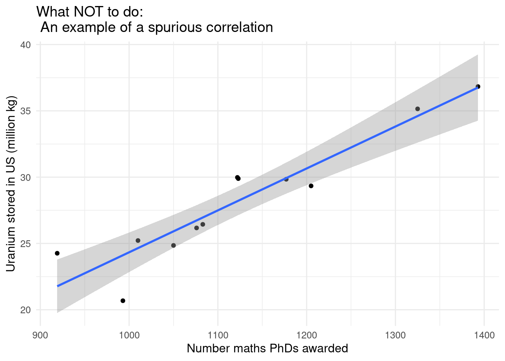
5.2 Which questions?
Example questions you can answer with a simple linear regression:
Inference
- How does mean annual temperature change with time?
- How does the time of breeding for a bird change with mean spring temperature?
- How does relative plant biomass change with mean light intensity?
Prediction
- What will the mean summer temperature be in 2100?
- How heavy will a sheep be if it is 100cm long?
5.3 Type of data
5.3.1 Theory
A linear regression is used when you have continuous numeric response variable and a continuous numeric explanatory variables. A simple linear regression has only one explanatory variable, a multiple linear regression has more than one.
Examples of continuous numeric variables:
- Mean annual temperature (°C)
- Total annual precipitation (mm)
- Distance (km)
- Height (cm)
- Weight (kg)
Always remember to check that the way your variables are classified in R is the same as the format you expect. It is a common mistake for a variable that should be numeric to be classified as a Factor, or a Factor as a character string etc. (This should not be a problem in the latest version of R, so might become a historical problem.)
5.3.2 Worked example
For this worked example we will be using some data on dive depths of marine mammals. We will be answering the question:
Does body size (kg) influence maximum dive depth (m) in marine mammals?
We might expect that differences in foraging strategies, physiological processes, metabolism, and power of the marine mammals would impact how deep the animals can dive. All of these variables correlate with body size. Therefore, it could be expected that larger species can dive deeper as relative movement compared to body size is lower. Or perhaps it is less energetically demanding for smaller species to dive deeper. The direction and strength of the influence of body size on dive depth can be quantified using a linear regression.

5.3.2.1 Introduction to the data
These data have four variables; species, maximum recorded dive depth in metres (m), body weight in kilograms (kg), and taxonomic group.
The data were collected from a variety of sources and cover several taxonomic groups (including polar bear, sea otters, baleen whales, toothed whales, seals, and sea lions). You can find the dataset here if you want to try the analysis for yourself.
Full list of data sources
Sources:
- British Broadcasting Coorporation (BBC)
- Croll et al 2001, Comparative Biochemistry and Physiology Part A: Molecular & Integrative Physiology, Volume 129, Issue 4, Pages 797-809
- Baird et al 2000, Report prepared under Contract #40ABNC050729 from the Hawaiian Islands Humpback Whale National Marine Sanctuary
- Bannister 2008, Great Whales, CSIRO Publishing
- Norwegian Polar Institute
- Eguchi and Harvey 2005, Marine Mammal Science, 21: 283-295
- Lloyd Spencer Davis, Te Ara - the Encyclopedia of New Zealand, (accessed 30 September 2020)
- Gales et al 2013, Unpubished Report to the IWC
- Dolphin Communication Project
- Encyclopedia of Marine Mammals edited by Würsig, Perrin, Thewissen, 2002, Elsevier Ltd
- Polar Bear Science
- Marine Biology, compiled by Steele, edited by Steele, Thorpe, Turekian, 2009, Elsevier Ltd
- North Atlantic Marine Mammal Commission
- National Oceanic and Atmospheric Administration, USA
- Department of Conservation, New Zealand
First, we want to import the data and have a closer look by making a plot.
dive_data# A tibble: 30 × 6
species max_depth body_size_kg group Species Group
<chr> <int> <dbl> <chr> <fct> <fct>
1 Orca 264 4500 Twhale Orca Twha…
2 WeddellSeal 741 500 Pinniped WeddellSeal Pinn…
3 LongFinnedPilot 828 1300 Twhale LongFinnedPilot Twha…
4 ShortFinnedPilot 1019 2000 Twhale ShortFinnedPil… Twha…
5 BlainvillesBeakedWhale 1408 900 Twhale BlainvillesBea… Twha…
6 NorthernBottlenoseWhale 1453 8000 Twhale NorthernBottle… Twha…
7 SouthernElephantSeal 1653 3000 Pinniped SouthernElepha… Pinn…
8 BairdsBeakedWhale 1777 12000 Twhale BairdsBeakedWh… Twha…
9 SpermWhale 2035 27000 Twhale SpermWhale Twha…
10 CuviersBeakedWhale 2992 2500 Twhale CuviersBeakedW… Twha…
# ℹ 20 more rowsdive_fig <- ggplot(dive_data,
aes(x = body_size_kg, y = max_depth, color = group)) +
geom_point()
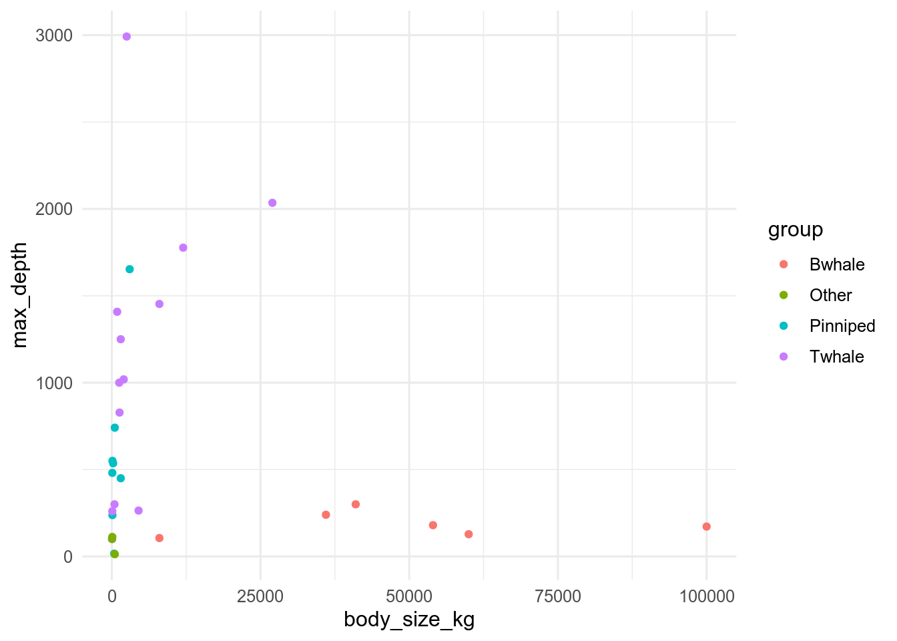
The output shows that two of the variables are factors (species and group), one is continuous numeric (max_depth), and the last one is integer (body_size_kg). We know that body size actually is a continuous variable, scientists probably rounded when they measured this variable, because these are large numbers. We will change this variable to be numeric so it better represents the characteristics of the data.
# format the divedata
dive_data <- mutate(dive_data, body_size_kg = as.numeric(body_size_kg))Remember, we are interested in whether body size (kg) influences maximum dive depth (m) in marine mammals. To answer this question we will need the variables: body_size_kg and max_depth. We will not consider species or group at the moment, but we might need them later.
Now we have familiarized ourselves with the data, we know our research question, and we have identified which variables we need for the analysis. We are ready to perform an analysis.
5.4 Model details
5.4.1 Theory
When we create a model we aim to represent mathematically the process that generated the data we observed.
When we use a linear regression model (this is also true for other types of linear models), we make an assumption that there is a linear relationship between the explanatory and response variables. Mathematically, we say that we can capture the data generation process with a straight line and some error.
The line component of the linear regression is defined by two parameters:
- \(\alpha\) (Greek letter alpha) = the intercept, defining where the regression line crosses the y-axis.
- \(\beta\) (Greek letter beta) = the slope (steepness/gradient), which defines the steepness of the regression line, i.e. how much \(Y\) changes for every increase of 1 unit of \(X\).
We can alter the position and slope of the line by these two parameters. The final part of the model is \(\varepsilon\) (Greek letter epsilon), which is the error around the regression line. This error is estimated with the parameter \(\sigma^{2}\) (Greek letter sigma – squared) that is the variance of the error. (Greek letters are used to refer to each part of the model using equations).
We can write a linear regression model as and equation as a function of \(Y\):
\[ Y_i = \color{orange}\alpha + \color{blue}\beta X_i + \color{red}\varepsilon_i \]
5.4.1.1 Assumptions
There are several assumptions that we make when using a linear regression model:
- The relationship between X and Y is linear
- Residuals (this is another word for error) are normally distributed
- The residuals have a mean of 0
- The variance of the residuals is equal for all fitted values (homoscedasticity)
- There are no outliers
- Each value of Y is independent
All of these assumptions should be met for the model to work properly and they ALWAYS need to be checked. We will check five of them after we have fit the model (see below). The last assumption, independence of \(Y\) needs to be assured before or during data collection. For example, if data were collected on leaf length, 20 leaves each from five trees, these would not be independent. It would be better to collect one leaf each from 100 trees.
5.4.1.2 Writing the model in
To fit the simple linear regression in we will use the lm() function.
lm() stands for linear model (should seem familiar) and it takes several arguments:
- formula in form:
y ~ x - data: your data object
The function will fit the regression model using maximum likelihood estimation and give us the maximum likelihood estimates of \(\alpha\) and \(\beta\) as an output. It does also estimate \(\sigma^{2}\) of the error, but it does not report this.
To use the lm() function you first need to think about the formula argument, the y ~ x part. The same way as in the equation above, the letter \(Y\) always corresponds to the response variable (the thing you are trying to explain) and \(X\) to an explanatory variable (the thing you assume affects the response).
Does temperature influence wing length of butterflies?
The explanatory variable (\(X\)) = temperature, it is the variable that does the influencing. The response variable (\(Y\)) = wing length, it is the result.
You can then plug these variables into the lm() function in the below format using the column names in place of y and x and including your data frame name as the data argument.
model_object <- lm(response ~ explanatory, data = your_data)Running the lm() as illustrated above runs the linear regression model and saves the output as a ‘model_object’.
I saw an lm() written differently, what’s that about?
You can use the lm() function without the data argument. If you do this, you need to refer to your (\(X\)) and (\(Y\)) variables in the y ~ x formula using a $ between the data name and the column name.
We do not recommend using this approach. There are several reasons for this but a key one is that when using the $ syntax, R sees the variable name as the whole entry your_data$explanatory rather than as the column name explanatory. This makes it difficult to use this model for other things e.g. to predict.
alternative <- lm(your_data$response ~ your_data$explanatory)The results of the linear regression can be viewed using the function coef(). This takes the output of lm(), the model object, as its argument and extracts the maximum likelihood estimates of \(\alpha\) and \(\beta\). \(\alpha\) will always be labelled (Intercept) but \(\beta\) will be labelled by the name of the \(X\) variable.
coef(model_object)(Intercept) explanatory
2.7720862 0.7969848 5.4.2 Worked example
This worked example demonstrates how to fit a linear regression model in using the lm() function for the dive depths example.
In this example we are asking:
Does body size influence maximum dive depth in marine mammals?
Our question is formulated to suggest a direction of causality, we assume body size has a causal effect on maximum dive depth, therefore maximum depth is our response (\(Y\)) and body size as our explanatory variable (\(X\)).
We can put these variables into the lm() function in the below format.
dive_model <- lm(max_depth ~ body_size_kg, data = dive_data)Great. We have run a model and assigned it to an object name.
We can look at the maximum likelihood estimates of our model parameters (\(\alpha\) and \(\beta\)) using the function coef().
coef(dive_model) (Intercept) body_size_kg
755.977336598 -0.005384027 We will look at interpreting these in the next part of the worked example.
5.5 Parameters
5.5.1 Theory
We introduced the three model parameters of a simple linear regression in the section above: \(\alpha\) = the intercept, \(\beta\) = the slope of the line (steepness/gradient), and \(\sigma^{2}\) the variance of the error.
\[ Y_i = \color{orange}\alpha + \color{blue}\beta X_i + \color{red}\varepsilon_i \]
But what do these parameters really mean?
All regression analyses are fundamentally about using straight lines to represent the relationship between a response (\(Y\)) and some explanatory variables (\(X\)), called a regression line. The parameters of the model determine the placement and gradient of the straight line, as well as representing the distribution of data points around the line.
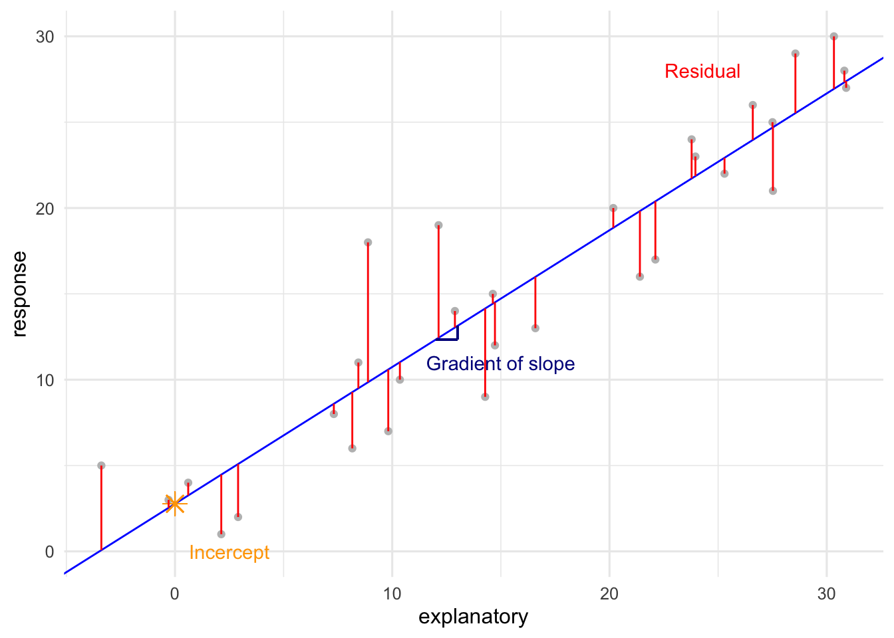
In this section we will go through these parameters and their meaning in terms of the relationship between \(X\) and \(Y\).
5.5.1.1 \(\alpha\), the intercept
This first parameter gives the value of \(Y\) when \(X\) = 0, it is the point that the regression line crossed the y-axis. A positive value means that the value of \(Y\) when \(X\) = 0 is above 0, and a negative intercept value means it is below the value of \(Y\) is below 0, when \(X\) = 0.
5.5.1.2 \(\beta\), the slope
This second parameter gives the amount of change in \(Y\) for every unit change in \(X\), it is the slope of the regression line. Positive values indicate a positive relationship between \(X\) and \(Y\) i.e. \(Y\) increases as \(X\) increases. Negative slope values indicate the opposite, a negative relationship where \(Y\) decreases as \(X\) increases. The higher the value of the slope, the stronger the regression relationship.
Together \(\alpha\) and \(\beta\) control the position and steepness of the regression line. They are called the systematic part of the model, the bit that links \(Y\) to the covariate \(X\).
5.5.1.3 \(\sigma^{2}\), the variance of error
This is the final parameter you need to estimate for the simple linear regression and it is a bit different from \(\alpha\) and \(\beta\). This parameter does not relate directly to the shape or position of the regression line. Instead, this parameter captures the variance of the data points around that line, i.e. how close or far away each data point is from the regression line. The variance is the random part of the model, or in other words the error. Higher error variance values indicate more variation around the model fit. In the case of a simple linear regression, the error is assumed to be normally distributed.
In Figure 5.5), you can see a plot of a regression line through the data points, but it does not touch all of the points. In other words, it is not capturing all of the variation in the data. The regression line does not explain the exact position of all data points, something else is also going on (this is to be expected for real data).
The regression line is a fitted line that represents the best fit line of a relationship between \(X\) and \(Y\) (based on maximum likelihood estimation). The value of \(Y\) for each \(X\) on the regression line is called a fitted value. The distance between the fitted values and the values of \(Y\) that were actually observed are called residuals. You can extract the residuals from your model object using the function residuals(), which is useful when checking model assumptions (see below). Data points below the regression line have a negative the residual and data points above the line have a positive residual. These are highlighted red in Figure 5.5).
The regression line must always pass through the point that represents the mean of \(X\) and the mean of \(Y\). (\(\bar{X}\), \(\bar{Y}\)). Therefore, if you change the intercept, the slope must change as well to keep the line going through the (\(\bar{X}\), \(\bar{Y}\)) point. You can have a go at doing this below.
5.5.1.4 Exercise: Finding a ‘best’ line
Below you will see a window containing an app. The aim of this app is to try and find the straight line that best explains the data, by trying different slope values.
There is a slider on the left hand side that lets you control the \(\beta\) value, the \(\alpha\) is fixed at 0. On the right you can see the fitted line (one is already plotted for you).
In this example ‘fit’ of the line is measured using something called the sum of squared residuals. This is calculated by squaring the values of all of the residuals and then adding them up to get a single number:
\[ \Sigma (y_i - \bar{y_i})^2 \] where, \(y_i\) = the observed value of \(y\) for \(x_i\) and \(\bar{y}\) = the fitted y value for \(x_i\), and \(i\) is an index of 1 to \(n\) (sample size).
The reason the sum of squares is used to estimate the fit of a model line to data is because there are roughly as many positive residuals as negative. If you just sum them, the result will be roughly 0. Therefore, squaring them before adding them means they don’t cancel out. This measure tells you how far away the observations are from the fitted line, the lower the number, the better the fit.
Click here to open the app in full scale in a separate window.
What was the best fit you managed to get?
What was the answer?
A slope of approximately 3 should give the best answer (lowest sum of squares), which is 3423.5956.
How confident are you that you found the best line?
It is hard to know by trial and error if you have found the ‘best’ line for the data. It is much easier, repeatable, and reliable to use a simple linear regression instead. The idea is the same as the app, but instead of trying until it looks good, the equation for simple linear regression is used and values for the unknown parameters are found using maximum likelihood estimation.
5.5.1.5 Interpreting the parameters
Now you know what each of the three parameters in a simple linear regression mean, you can now think about interpreting them.
Which of the three parameters do you think is most important for answering the research question “Does \(X\) influence \(Y\)?”?
I had a go, now show me the answer.
The slope (\(\beta\)) tells us the strength and direction the relationship between \(X\) and \(Y\) is. While the linear regression model also estimates the intercept and the residual variance, these do not directly answer our question of interest. However, to make predictions, we will need all three parameters.
5.5.2 Worked example
In the previous section of this worked example, we fit a simple linear regression using the lm() function and looked at the estimates of some parameters using the coef() function. In this section, we will use model theory to interpret what those parameters mean.
5.5.2.1 The intercept and slope
We already know that the parameters of the intercept and slope control the position and steepness of the regression line. It is the estimates of these two parameters that we get from the coef() function.
For our dive depth model the estimates are:
coef(dive_model) (Intercept) body_size_kg
755.977336598 -0.005384027 The intercept is 756 m and the slope of the relationship between body size and dive depth is -0.005.
In this case, the intercept is not that interesting. It tells us the expected value of \(Y\) (maximum dive depth) when \(X\) (body size) = 0. It does not make a lot of biological sense to know the expected dive depth of a marine mammal that weighs 0 kg. But, sometimes it can make sense to know the value \(Y\) when \(X\) is 0, for example if \(X\) was temperature.
The slope on the other hand is interesting. It tells us the direction and strength of the relationship between body size and maximum dive depth. In this case our model estimates a negative slope. This means that for every increase of 1 kg in body size of marine mammals the maximum dive depth decreases by 0.005 m. In other words, there is a negative relationship between body weight and dive depth and as \(X\) increases \(Y\) decreases (Figure 5.4).
5.5.2.2 Residual variance
The coef() function can give us the maximum likelihood estimates of the intercept and slope parameters, but it does not give any information on the residual variance, \(\sigma^{2}\). To get an estimation of the residual variance, we use the summary() function with the model object as an argument. To extract \(\sigma\) we use $sigma and square the result to get \(\sigma^{2}\).
You cannot take var(residuals) directly because this uses n-1 as the denominator of the variance equation whereas to estimate \(\sigma^{2}\) for a linear regression the denominator depends on the number of parameters being estimated. The denominator is the degrees of freedom (n-number of parameters estimated). In a simple linear regression there are two parameters that have been estimated (as well as \(\sigma^{2}\)) these are the intercept and the slope. Therefore, the denominator n-2. The more explanatory variables you add to a linear regression, the more parameters you estimate and the fewer degrees of freedom you will have.
sigma2 <- summary(dive_model)$sigma^2
sigma2[1] 526362.7For this model the \(\sigma^{2}\) = 5.263627^{5}. This number is abstract and does not mean anything on its own, but it could be used to compare models (though there are much better ways to do this). It does not help in terms of answering whether body size influences dive depth. But we will use it for prediction later.
5.5.2.3 Plotting the results
As well as looking at the maximum likelihood estimates of the parameters from the simple linear regression, we can also plot the estimated regression line.
To do this, we will use ggplot() with geom_line().
We will also go into the second aim of a regression: predicting. Therefore, we need to use a new function called predict().
To make this first plot, we only need to use two arguments:
-
object= your model object -
type= “response”, which means predict on the response scale
depth_predictions <- predict(dive_model, type = "response")Once we have created predictions of \(Y\) from the model object, we can then plot these using geom_line() as in the code below.
dive_model_fig <- ggplot(dive_data, aes(x = body_size_kg, y = max_depth)) +
geom_point(colour = "grey70") +
geom_line(aes(y = depth_predictions)) +
labs(
y = "Maximum Dive Depth (m)",
x = "Body Size (kg)"
)
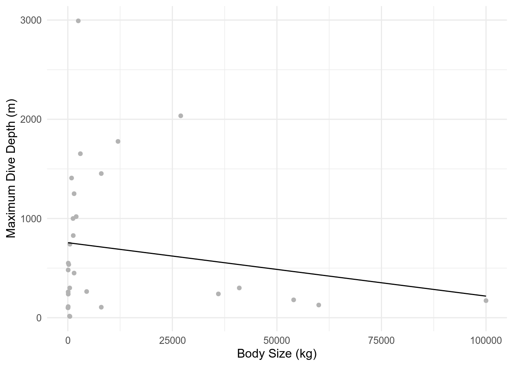
In the next section we will look at how to add uncertainty to these plots and our interpretation.
5.6 Quantify uncertainty
5.6.1 Theory
You should already know that statistics does not give a single correct answer. When you estimate the values of parameters in our statistical model, there are many different values that could plausibly have produced the observed data. Some of these are more likely than others but several will have very similar likelihoods.
A simple linear regression is no different. And a way to cope with this, is to calculate and present the uncertainty in the parameters you estimate.
The lm() function produces results that are equivalent to maximum likelihood estimation of the parameters. Therefore, our consideration of uncertainty for these models follows the same principles as discussed here. You can quantify uncertainty using standard errors, confidence intervals, and prediction intervals which should be familiar to you but head to the uncertainty pages if you need a recap.
For any regression there are two different types of uncertainty. Here, we cover at the uncertainty in the parameters of the regression line, \(\alpha\) and \(\beta\) and the uncertainty in predictions of \(Y\).
5.6.1.1 Uncertainty in the estimates of \(\alpha\) and \(\beta\)
5.6.1.1.1 Standard error
The standard error of a parameter is the standard deviation of its sampling distribution. It gives a measure of the spread of the sampling distribution i.e. the uncertainty. To find the standard errors for the estimates of \(\alpha\) and \(\beta\) you can use the summary() function. The argument that summary() takes is a model object, the output from lm(). This function gives a big table with lots of information. The first line shows the model formula used for the model object. The second line shows a summary of the residuals of the model and the standard errors are shown as the second column in the third part, Coefficients:.
summary(model_object)
Call:
lm(formula = response ~ explanatory, data = your_data)
Residuals:
Min 1Q Median 3Q Max
-5.1510 -3.0636 0.3854 1.4128 8.1477
Coefficients:
Estimate Std. Error t value Pr(>|t|)
(Intercept) 2.77209 1.11970 2.476 0.0196 *
explanatory 0.79698 0.05925 13.452 9.61e-14 ***
---
Signif. codes: 0 '***' 0.001 '**' 0.01 '*' 0.05 '.' 0.1 ' ' 1
Residual standard error: 3.28 on 28 degrees of freedom
Multiple R-squared: 0.866, Adjusted R-squared: 0.8612
F-statistic: 181 on 1 and 28 DF, p-value: 9.611e-14If we take the summary() of the example model, we can see the standard error or the intercept (\(\alpha\)) is 0.95825, and the standard error for the slope (\(\beta\)) is 0.05483.
5.6.1.1.2 Confidence intervals
For interpretation of the uncertainty, it can be easier to use the standard error to calculate confidence intervals (CI). Confidence intervals indicate the range of plausible values for a parameter. They represent an interval, that if you were to collect a sample and run the analysis, then repeat that many many times AND each time draw a confidence interval, on average 95% of the time, the true population value of the parameter would be found in within the confidence interval.
If you need a reminder of this click here.
The confidence interval can be calculated using this formula:
\[ \begin{aligned} UpperCI = estimate + (1.96 SE) \\ LowerCI = estimate - (1.96 SE) \\ \end{aligned} \]
1.96 is used because in a standard normal distribution 95% of the distribution lies within 1.96 standard deviations of the mean. In this case the distribution is the sampling distribution, which is normal for \(\alpha\) and \(\beta\) and the standard deviation is the standard error.
Using the formulas above, calculate the confidence intervals for the intercept and slope from the example model.
I had a go at calculating, what is the correct answer?
# INTERCEPT
# Upper confidence interval
upper_ci_intercept <- summary(model_object)$coefficients[1, 1] +
(1.96 * summary(model_object)$coefficients[1, 2])
# Lower confidence interval
lower_ci_intercept <- summary(model_object)$coefficients[1, 1] -
(1.96 * summary(model_object)$coefficients[1, 2])
# Print the interval
c(upper_ci_intercept, lower_ci_intercept)[1] 4.9667025 0.5774699# SLOPE
# Upper confidence interval
upper_ci_slope <- summary(model_object)$coefficients[2, 1] +
(1.96 * summary(model_object)$coefficients[2, 2])
# Lower confidence interval
lower_ci_slope <- summary(model_object)$coefficients[2, 1] -
(1.96 * summary(model_object)$coefficients[2, 2])
# Print the interval
c(upper_ci_slope, lower_ci_slope)[1] 0.9131062 0.6808633It is also possible to get R to calculate the confidence intervals for you. To do this you can use the confint() function. The argument is a model object.
confint(model_object) 2.5 % 97.5 %
(Intercept) 0.4784802 5.065692
explanatory 0.6756256 0.918344Hopefully these confidence intervals look the same as those you calculated yourself.
5.6.1.2 Uncertainty in a prediction of \(Y\)
So far, we have covered uncertainty in parameter estimates using standard errors and confidence intervals but linear regression analyses can also be used for prediction. When a linear regression is used for prediction, an interval of confidence in the prediction should also be given. This is a type of confidence interval specific for predictions and can be called a prediction interval.
A 95% prediction interval tells you, if you were to collect a sample and run the analysis, then go out an collect a new observation of the response variable (\(Y\)) with particular value of the explanatory variable (\(X\)) many many times AND each time draw a prediction interval, 95% of the time, the new observation would fall in within the prediction interval.
To find the prediction interval for a prediction you use the predict() function with the interval="prediction" argument. You also set the newdata argument to the value of \(X\) you want to predict for.
predict(model_object,
newdata = x_predict,
type = "response", interval = "prediction"
)5.6.2 Worked example
At the end of the last section, we created a plot of our dive depth data and the estimated linear regression line. Now, we will add uncertainty to that plot.
First, we should look at the confidence intervals of our parameter estimates.
The confidence intervals have been rounded to 2 decimal places to make them easier to read. The intercept interval spans from approx 450 to 1060. The slope interval crosses 0, going from -0.02 to +0.01.
To add these intervals to the plot, we need to make new predictions including the confidence interval. In this case we are using confidence intervals even though we are predicting, because we want to show the uncertainty in \(\alpha\) and \(\beta\) rather than in a novel prediction. We have to make predictions in order to plot rather than because we are interested in them.
depth_predictions <- as_tibble(
predict(dive_model, type = "response", interval = "confidence")
)Once we have created predictions of \(Y\) from the model object, we can then plot these using geom_line() and geom_ribbon() for the confidence interval as in the code below.
depth_predictions <- depth_predictions |>
mutate(x = dive_data$body_size_kg)
fig_7 <- ggplot() +
geom_ribbon(data = depth_predictions, aes(x = x, ymin = lwr, ymax = upr),
fill = "grey50") +
geom_point(data = dive_data, aes(x = body_size_kg, y = max_depth),
colour = "grey70") +
geom_line(data = depth_predictions, aes(y = fit, x = x)) +
labs(
y = "Maximum Dive Depth (m)",
x = "Body Size (kg)"
)
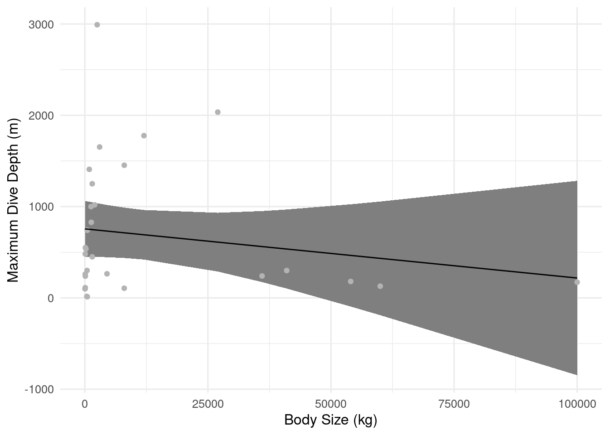
You will notice that the confidence interval is narrower in the middle and wider at the ends. This is partly to do with the constraint that the regression line must go through the (\(\bar{X}\), \(\bar{Y}\)) point so the intercept and slope are not independent. Therefore, the confidence interval will be narrowest close to that point.
The plot shows that the uncertainty in the estimated relationship gets increasingly uncertain as you get to higher body sizes.
5.6.2.1 Predicting dive depths for a body size of 75000kg
A colleague as just found a new species of whale (fictional). The whale washed up on shore in Tromsø, it weighed 75000kg. Based on our linear regression analysis, how deep would we expect it to dive?
predict(dive_model,
newdata = data.frame(body_size_kg = 75000),
type = "response", interval = "prediction"
) fit lwr upr
1 352.1753 -1328.376 2032.727The mean prediction is 352m deep. This seems ok. But when we look at the prediction interval, we see that when we include uncertainty, we are not even sure if they whale will dive below the surface by 2km or jump into the air by 1.3km. When we include uncertainty, it is clear that based on the current data and model, we cannot say anything about the possible dive depth of the new whale. We even get biologically unrealistic predictions.
This is something we will look at in the next section.
5.7 Model checking
You have now have a model, estimates of parameters, and have calculated the uncertainty of the parameters. But how can we know if a model is any good?
5.7.1 Theory
To find out if the model is any good from a theoretical perspective, you need to check if the model meets the five assumptions of the linear regression that are stated in the Model details section above.
For this, you can use graphs called diagnostic plots. There are four key diagnostic plots that we use for simple linear regression and each plot tests whether a different assumption has been met. To make the diagnostic plots, you use the plot() function with our linear model object as the first argument and which = number as the second. The number should be replaced by the number corresponding to the plot you want.
For more on what each plot means, go here: Model checking. On this page, you can find some example plots for a simple linear regression.
Note: for all of these plots, we do not expect perfection, especially for biological data.
5.7.1.1 1. Residuals vs fitted plot
There are two examples of residuals vs fitted plots shown below. If the assumptions are met, you can expect a few characteristics of the plot:
- The red line should be roughly horizontally straight and at 0
- There should be no structure in the residuals
- The residuals should not curve
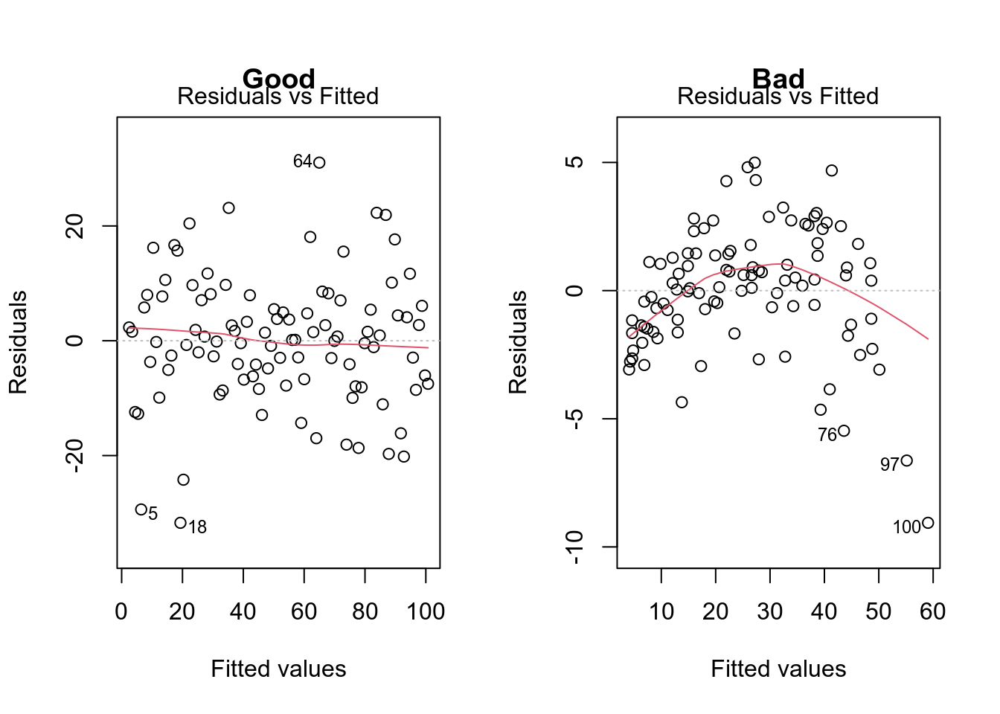
In reality, it will not be as clear cut as the examples above. You will need to use your own judgment to decide if the assumption is sufficiently met. Do not expect perfection.
5.7.1.2 Normal QQ plot
There are two examples of normal QQ plots shown below. If the assumptions are met, you can expect:
- The points to lie along the line
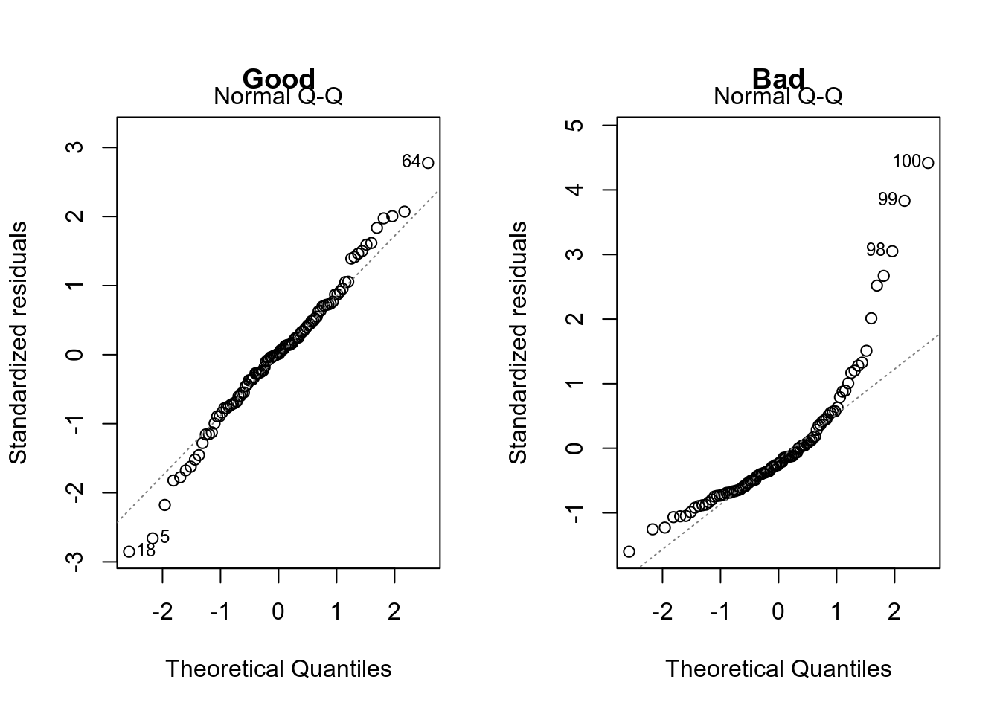
Notice that the y-axes have different values.
5.7.1.3 Scale-location
There are two examples of scale-leverage plots shown below. If the assumptions are met, you can expect:
- The red line to be horizontal
- There is no structure in the points
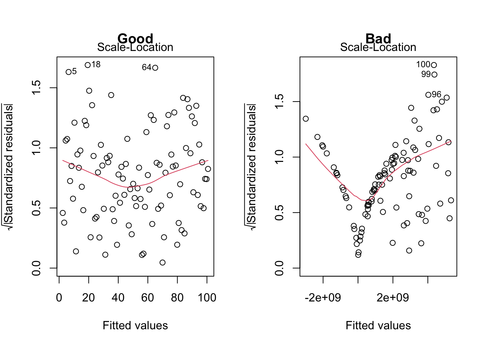
5.7.1.4 Cook’s Distance
There are two examples of Cook’s Distance plots shown below. If the assumptions are met, you can expect:
- Low values of Cook’s Distance (y-axis) and no points standing out on their own
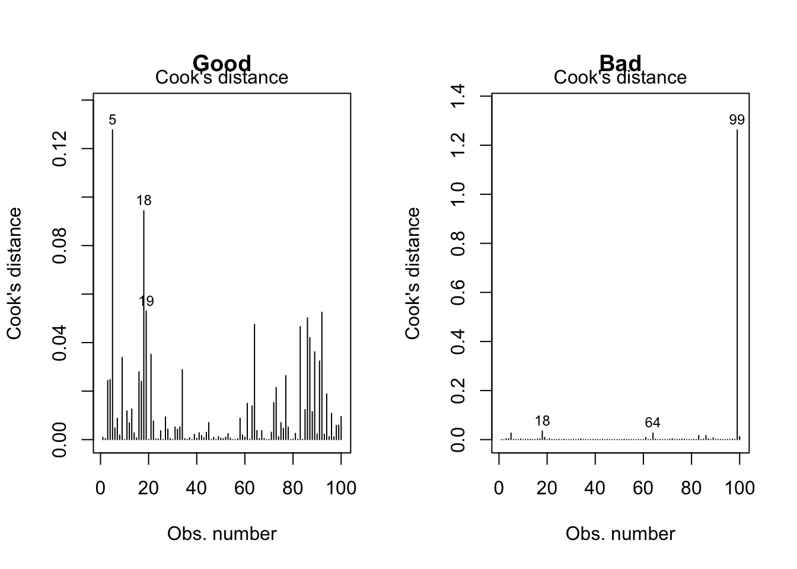
Notice that the y-axes have different values.
5.7.2 Worked example
Using the theory covered in the previous section, we can now check our dive_model to ensure that it meets the assumptions of a simple linear regression.
We will use one plot at a time to test specific assumptions.
5.7.2.1 Residuals vs fitted
plot(dive_model, which = 1)
Figure 5.12 looks quite unusual.
There are a few assumptions we are checking with this plot:
- Is the relationship between X and Y linear? It does seem to be. While the red line is not straight, it does not show a clear pattern until the very end. At the very end, there is a strong negative trend. We might need to come back to this! It seems like there might be one pattern for shallow diving species and another for the deep divers.
- Do the residuals have a mean of 0? There is a deviation at fitted values of > 700, otherwise yes, the mean of the residuals is approximately 0.
- Is the variance of the residuals is equal for all fitted values (homoscedasticity)? It is not the nice cloud of random points that we expect. But is it a problem? To answer this, we need to look at bit closer. The strange shape comes from the residuals at low fitted values, these are the shallow diving marine mammals. You might notice that there are very few of these values. The majority of the data have fitted values > 700. Where we have more data, the residuals vs fitted plot looks better.
At this point, it might be hard to say how problematic the low variance caused by the lack of data for low fitted values is. But, we can have a look at the points causing the pattern (those with a maximum dive depth < 600m).
filter(dive_data, max_depth < 600)# A tibble: 19 × 6
species max_depth body_size_kg group Species Group
<chr> <int> <dbl> <chr> <fct> <fct>
1 Orca 264 4500 Twhale Orca Twhale
2 HomoSapien 112 85 Other HomoSapien Other
3 BlueWhale 172 100000 Bwhale BlueWhale Bwhale
4 FinWhale 128 60000 Bwhale FinWhale Bwhale
5 HumpbackWhale 240 36000 Bwhale HumpbackWhale Bwhale
6 SouthernRightWhale 180 54000 Bwhale SouthernRightWhale Bwhale
7 BrydesWhale 300 41000 Bwhale BrydesWhale Bwhale
8 Walrus 450 1500 Pinniped Walrus Pinnip…
9 LeopardSeal 16 400 Pinniped LeopardSeal Pinnip…
10 HarbourSeal 481 85 Pinniped HarbourSeal Pinnip…
11 CaliforniaSeaLion 536 226 Pinniped CaliforniaSeaLion Pinnip…
12 NZFurSeal 238 100 Pinniped NZFurSeal Pinnip…
13 NZSeaLion 550 110 Pinniped NZSeaLion Pinnip…
14 MinkeWhale 106 8000 Bwhale MinkeWhale Bwhale
15 CommonDolphin 260 80 Twhale CommonDolphin Twhale
16 HarbourPorpoise 100 55 Twhale HarbourPorpoise Twhale
17 PolarBear 13 500 Other PolarBear Other
18 SeaOtter 101 30 Other SeaOtter Other
19 BottlenoseDolphin 300 450 Twhale BottlenoseDolphin Twhale From these data, we can see that five of the six baleen whales (Group = Bwhale) are included in this subset. This is quite interesting. It could be biologically reasonable that these whales follow a different pattern to the other species because their physiology is very different.
Keep that last point in mind when we get on to interpreting the results.
5.7.2.2 Normal QQ
plot(dive_model, which = 2)
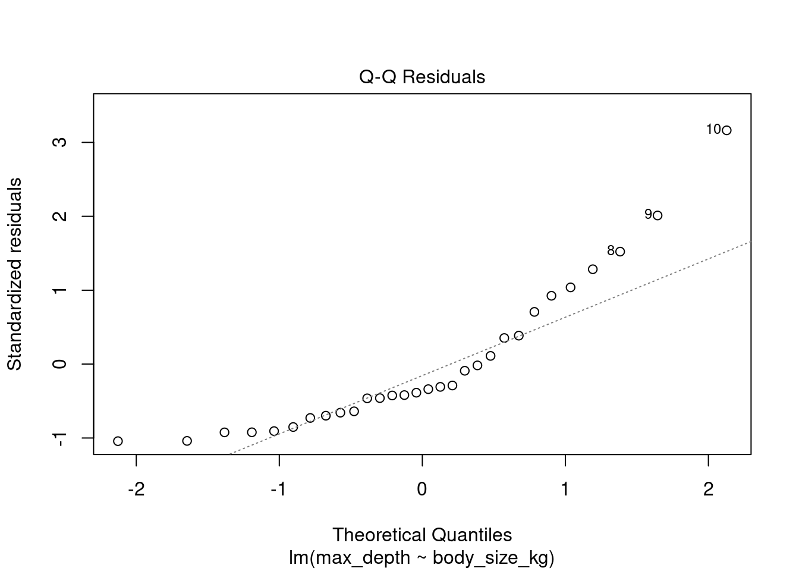
The assumption we are checking with this plot is: are the residuals are normally distributed?
As expected, there is not a perfect match between the theoretical normal distribution and the distribution of the residuals. There is some deviation at both tails of the distribution. At lower quantiles, this seems ok. At higher values, points 9 and 10 deviate quite a lot. These points also stood out in Figure 5.12. We will need to look into them more in Figure 5.15.
5.7.2.3 Scale-location
plot(dive_model, which = 3)
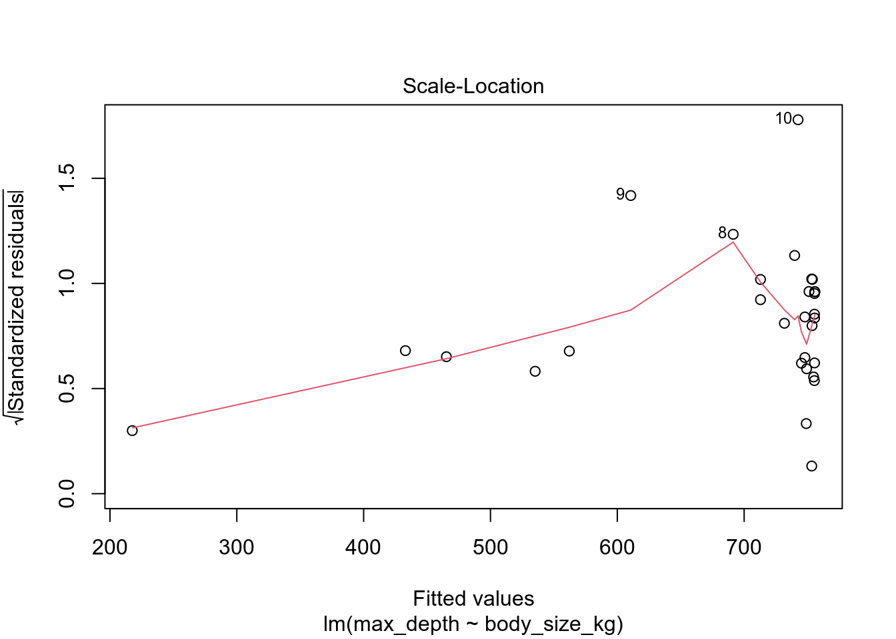
The assumption we are checking with this plot is: Do the residuals have equal variance across fitted values?
Figure 5.14 shows a very similar picture to Figure 5.12. While there is a slight increase in variance as the amount of data increases, the amount of change is < 0.5 and there is not much structure in the points. So, this looks like things are ok.
5.7.2.4 Cook’s distance
plot(dive_model, which = 4)
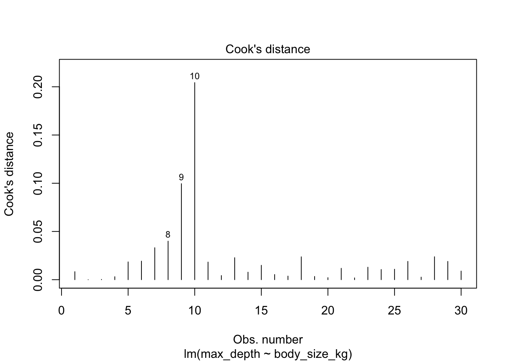
The assumption we are checking with this plot is: Are there any outliers?
Figure 5.15 shows that the Cook’s distances of this model are not very high (max = 0.2). So, it does not seem that any points have that large an influence on the fitted values. However, point 10 does seem to be quite different from the others. This might be worth looking into.
We can find point 10 by looking at the 10th row of our data frame. It is the entry for the Cuvier’s beaked whale. While this is a rare and unusual whale, it is not the only beaked whale in our dataset and we have no reason to believe this data is a typo. Therefore, we would not consider this an outlier and would not remove from the data.
dive_data |> slice(10)# A tibble: 1 × 6
species max_depth body_size_kg group Species Group
<chr> <int> <dbl> <chr> <fct> <fct>
1 CuviersBeakedWhale 2992 2500 Twhale CuviersBeakedWhale Twhale5.7.2.5 Summary
Overall, it seems that most of the model assumptions are met well. The only red flag is in the equal variance assumption. However, this seems to be caused in part by a lower amount of data available at the extremes of dive depths. Therefore, we think it is ok to proceed with this model.
In the next section we will interpret our results.
5.8 Draw conclusions
5.8.1 Theory
In the previous sections you learned how to run a simple linear regression models, what the parameters of the model mean, how to quantify uncertainty in the parameters, and how to check the assumptions of the model. Now, you can bring everything together to draw some conclusions.
There are several components required in drawing a conclusion:
- statement of the maximum likelihood estimate of the parameters of interest (including strength and direction)
- statement of the uncertainty in the estimate
- statement of how good the model is i.e. how well the model meets assumptions and the amount of variance explained (using \(R^2\) - explained below)
- link the results to biology and the question asked
- Discussion of next directions
One measure that can be useful for conclusions is to know how much of the variation in \(Y\) is explained by \(X\). To answer this you can use a measure called the \(R^2\). It is calculated using the following equation:
\[ R^2 = 1 - \frac{\color{darkblue}{\text{Residual Variance}} }{\text{Total Variance}} \]
and can be found in R using summary(your_model)$r.squared. The value is a proportion, so between 0 (no variance explained) and 1 (all variance explained). A good value is subjective, but > 0.5 is usually considered good, > 0.7 is very good and a value of 1 is suspicious. For biological data, achieving an \(R^{2}\) of 0.5 or higher can be challenging because in the real world there are lots of variables influencing each response, more than we could measure and include in an analysis. In these cases, \(R^{2}\) could be as low as e.g. 0.3 or 0.1, but this does not mean the model is not valid. It only means that other processes are causing variation in the response on top of those included in the model.
5.8.2 Worked example
This is the final section of our analysis of the data on marine mammal maximum dive depths. We will now bring together all of the results we have obtained and draw a conclusion following the same format as in the theory section.
A reminder, we were asking: Does body size influence maximum dive depth in marine mammals?
The maximum likelihood estimate of the relationship between body size and maximum dive depth in marine mammals was -0.005. In other words, for every 1 kg increase in body weight, marine mammals dived 0.005 m less deep. Given that some marine mammals can dive 1000s of metres, this increase per kg is very low.
When we look at the uncertainty in this estimate, we see the 95% confidence interval is -0.017 to 0.006. The confidence interval limits are different signs, meaning that 0 is included as a plausible value for the strength of the relationship. Therefore, we cannot conclude that body size has any impact on maximum dive depth in marine mammals. This is supported by the \(R^2\) value, which is 0.03, suggesting only 3% of the variation in maximum dive depth is explained by body size. This is a good example of the lower \(R^2\) we often get in biology.
We should remember here, that when we predicted a dive depth for the fictional whale, it gave us a negative result. Linear models fit a straight line, which can extend beyond the realistic values for some variables. This should be noted and predictions should not be made outside of values that are plausible. This is one reason why predicting outside of the range of your data can be problematic. We can also fit models that are not linear, there is more on those here.
In model checking, there was an interesting pattern shown, of little data at the lowest maximum dive depths and a disproportionate representation of baleen whales. If we plot the data by group and allow ggplot to fit a regression line per group, we can see that there seems to be a different pattern for different taxonomic groups. This would make sense based on physiology and might explain why the variance assumption was not met well AND why the estimated relationship was so weak.
final_dive_fig <- ggplot(
dive_data,
aes(x = body_size_kg, y = max_depth, color = group)
) +
geom_point() +
facet_wrap(facets = vars(group)) +
geom_smooth(method = "lm")
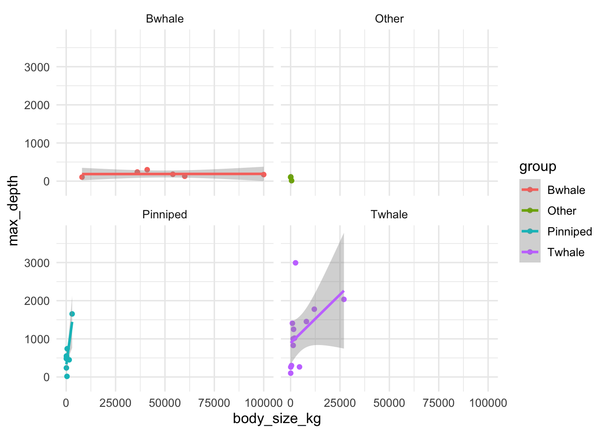
While the baleen whales show no relationship between dive depth and body size, both the pinnipeds (seals and sea lions) and the toothed whales (orca, dolphins, porpoises) show quite strong positive relationships between dive depth and body size. By treating all groups as the same in one analysis, we might have been masking the true effects.
It might be more appropriate to consider an effect of Group as well as body size. We can do this using Linear models for categorical explanatory variables/ANOVA, check out these pages to continue the analysis of this data.
NoteWhat’s next
- Linear models for categorical explanatory variables/ANOVA for analyses when your explanatory variable is not numeric
- Multiple regression for analyses with more than one numeric explanatory variable
- Generalised linear models for analyses when your response variable is not normally distributed
NoteFurther reading
Contributors
- Emily G Simmonds